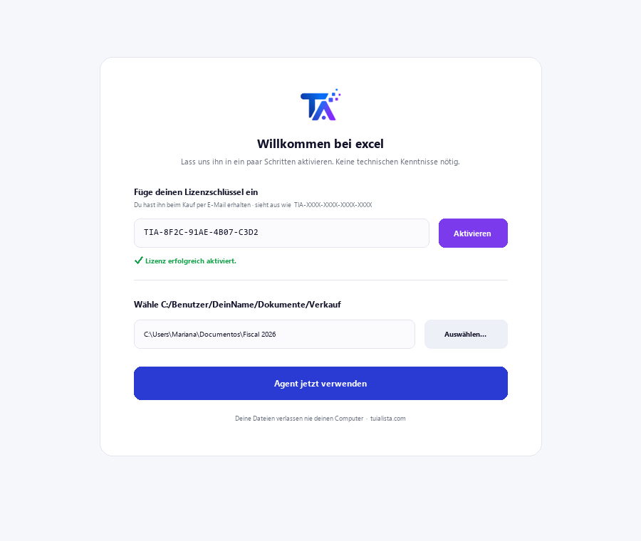
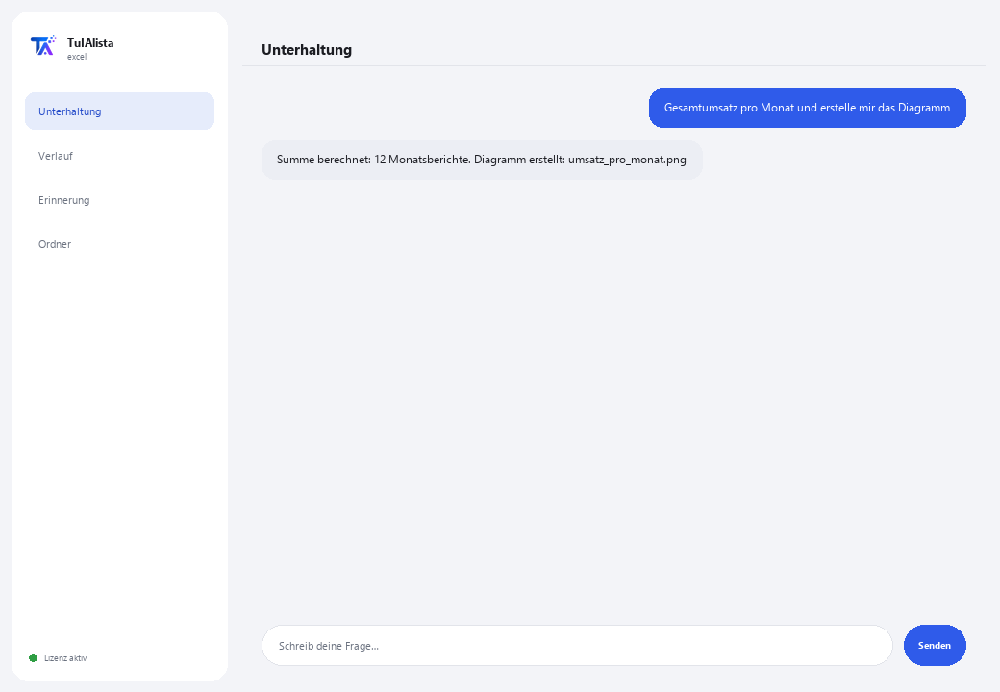

Excel- und Datenagent
Sagen Sie ihm in Ihrer eigenen Sprache, was Sie brauchen, und er ERLEDIGT es wirklich: Summen, Verknüpfungen, Pivot-Tabellen, Diagramme und Berichte — ohne dass Sie eine einzige Formel schreiben.
Was löst er und was brauchen Sie?
Kein Chat, der nur Ihre Daten kommentiert: Er ist ein Analyst, der die Operation wirklich ausführt (in einer sicheren lokalen Sandbox, isoliert von Ihrem System) und Ihnen das Ergebnis liefert — Tabelle auf dem Bildschirm und die Excel-Datei oder das Diagramm fertig zum Öffnen.
- Sie brauchen: Ihren Lizenzschlüssel (TIA-XXXX-XXXX-XXXX-XXXX) und den Ordner mit Ihren Excel-Tabellen (.xlsx) oder CSV. Kein Python, keine Formeln.
- Erstes Ergebnis in weniger als 5 Minuten: Sie installieren, aktivieren, wählen Ihren Ordner und bitten ihn “Gesamtumsatz pro Monat und erstelle mir das Diagramm”.
- Ihre Daten verlassen nie Ihren Computer — an die KI geht nur die Struktur (Spalten), niemals die Daten, und die häufigsten Rezepte nutzen nicht einmal KI.
soporte@tuialista.com oder besuche tuialista.com/soporte — wir antworten normalerweise am selben Werktag.1 Was dieser Agent tut
Sie zeigen ihm Ihre Tabellen und bitten ihn um alles in Ihrer eigenen Sprache:
- “ermittle die Summe pro Region und erstelle mir das Diagramm”
- “erstelle ein Blatt mit diesen Spalten und verknüpfe es mit der anderen Datei”
- “Management-Bericht mit Formatierung, Pivot-Tabelle und eingebettetem Diagramm”
Der Agent versteht, baut die Operation auf und führt sie wirklich aus in einer sicheren lokalen Sandbox — er beschreibt nicht nur, was er tun würde. Außerdem:
- Er hat automatische Rezepte (feste, bereits getestete Regeln, ohne KI, die nie versagen) für das Häufigste: 2 Dateien abgleichen, konsolidieren, Forderungsalterung, Mindestbestand unterschritten, Daten aus einer anderen Tabelle holen (wie SVERWEIS/VLOOKUP, aber ohne Formeln), Pivot-Tabellen, Cashflow, Umsatzsteuer und mehr.
- Er erinnert sich zwischen Fragen: Sie können ihm sagen “füge das der vorherigen Datei hinzu” oder “speichere es in meinen Dokumenten”.
- Er kann Ihre mehrstufigen Routinen aufzeichnen und sie auf Anfrage wiederholen.
- Er hat einen Live-Modus: Wenn Sie Excel bereits geöffnet haben, kann er Zellen direkt dort lesen und schreiben (mit Ihrer Bestätigung, bevor etwas geschrieben wird).
2 Installation (2 Minuten)
Für Windows. Keine dauerhafte Internetverbindung nötig, nichts wird in die Cloud hochgeladen.
Laden Sie das Installationsprogramm von tuialista.com/descargar herunter (Excel-Agent) und öffnen Sie es. Es erstellt eine Verknüpfung mit dem Logo auf Ihrem Desktop — kein Python oder Terminal erforderlich.
Doppelklicken Sie auf das neue Symbol. Fügen Sie Ihren Lizenzschlüssel ein (er wurde Ihnen beim Kauf per E-Mail zugesandt) und klicken Sie auf Aktivieren. Sie sehen ein grünes Häkchen, wenn er gültig ist.
Wählen Sie den Ordner mit Ihren Excel-Tabellen (.xlsx) oder CSV aus und klicken Sie auf Agent jetzt verwenden. Beim nächsten Mal startet er direkt — er merkt sich Ihren Schlüssel und Ihren Ordner.

3 So verwenden Sie ihn
Der Agent öffnet ein Chat-Fenster, wie eine Messaging-App — kein schwarzer Programmierer-Bildschirm. Keine Befehle zum Auswendiglernen: Sie bitten ihn um das, was Sie brauchen, so wie Sie es einem Analysten sagen würden, klicken auf Senden (oder Enter), und er erledigt es:

Was er OHNE KI erledigt (sicherer Modus, standardmäßig aktiviert)
- 2 Dateien abgleichen / Fehlendes erkennen
- Mehrere Dateien zu einer konsolidieren · Duplikate entfernen · bereinigen
- Forderungen nach Alter (30/60/90 Tage)
- Bestand: unter Mindestbestand · bewerten · toter Bestand
- Daten verknüpfen und abrufen (SVERWEIS) · Pivot-Tabellen · Top-N · Summen nach X
- Preise/Versionen vergleichen · günstigstes Angebot · Anomalien erkennen
- Cashflow · Budget vs. Ist · Umsatzsteuer · Stempeluhr-Stunden
Möchten Sie die 20 vollständigen Rezepte mit einem echten Beispiel für jedes sehen? Sehen Sie sich den Rezeptkatalog an — ein eigenes Dokument wegen seiner Länge: catalogo_recetas.pdf neben diesem Handbuch, oder die interaktive Version unter tuialista.com/guia/excel/recetas.
Erinnerung und Routinen
Sie können ihm sagen “speichere das als meinen Wochenbericht”, um eine Operation später mit “führe meinen Wochenbericht aus” zu wiederholen, oder “mach da weiter, wo wir gestern aufgehört haben” — sogar in einer anderen Sitzung.
Live-Modus (Excel geöffnet)
Wenn Sie die Datei bereits in Excel geöffnet haben, können Sie direkte Fragen zu Zellen stellen (“wie viel ergibt B2:B40?”, “trage in D5 die Summe ein”). Lesevorgänge antworten sofort; Schreibvorgänge zeigen Ihnen eine Vorschau und warten auf Ihr “ja”, bevor die Datei berührt wird.
4 Beispiele für häufige Anwendungen
Eine Summe ohne Formeln ermitteln
“wie hoch war der Gesamtumsatz im März?”
Zeiträume oder Kategorien vergleichen
“vergleiche die Verkäufe von Januar mit Februar nach Region” — antwortet mit einer Vergleichstabelle.
Zwei Dateien abgleichen
“gleiche die Bankdatei mit der Buchhaltungsdatei ab und sag mir, was fehlt” — automatisches Rezept, ohne KI.
Ein vollständiger Bericht
“Management-Bericht mit Formatierung, Pivot-Tabelle und eingebettetem Diagramm” — liefert Ihnen die fertige Excel-Datei.
5 Häufig gestellte Fragen
Werden meine Daten ins Internet hochgeladen?
Welche Formate akzeptiert er?
Führt er die Operation wirklich aus oder beschreibt er sie nur?
Was passiert, wenn ich etwas außerhalb der getesteten Rezepte anfrage?
Kann der Live-Modus mein geöffnetes Excel beschädigen?
In welcher Sprache antwortet er mir?
Kann er mehrere Dateien gleichzeitig lesen?
Kann ich den Datenordner ändern?
Verändert er meine Originaldateien?
Was sind “Routinen”?
6 Problemlösung
Eine Excel-Datei wird nicht geladen
Zeigt “0 Tabellen geladen”
Zeigt “Lizenz ungültig” oder fordert erneute Verbindung
Zeigt an, dass diese Aufgabe nicht im sicheren Modus verfügbar ist
Der Live-Modus reagiert nicht
Keine dieser Lösungen hat Ihr Problem behoben? Schreiben Sie uns direkt — wir schauen es uns gerne gemeinsam mit Ihnen an.
soporte@tuialista.com oder besuche tuialista.com/soporte — wir antworten normalerweise am selben Werktag.7 Datenschutz und Vertraulichkeit
Ihre Daten verlassen nie Ihren Computer.
- Die automatischen Rezepte (Abgleichen, Konsolidieren, Forderungen, Bestand, Daten aus einer anderen Tabelle abrufen, Pivot-Tabellen, Cashflow...) laufen 100 % lokal, ohne KI.
- Bei neuen Aufgaben mit KI (Expertenmodus) wird der KI nur die Struktur (Spaltennamen) gesendet, niemals Ihre Daten.
- Das Einzige, was über das Internet läuft, ist: (1) eine Überprüfung, dass Ihre Lizenz aktiv ist, und (2) die Struktur Ihrer Tabellen, wenn KI für eine neue Aufgabe benötigt wird.